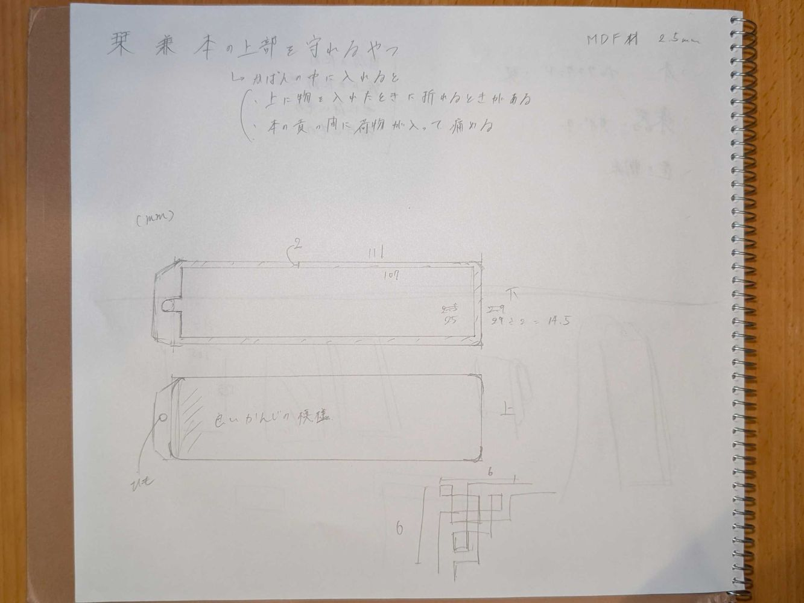
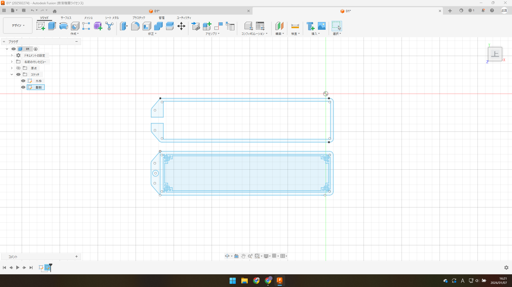
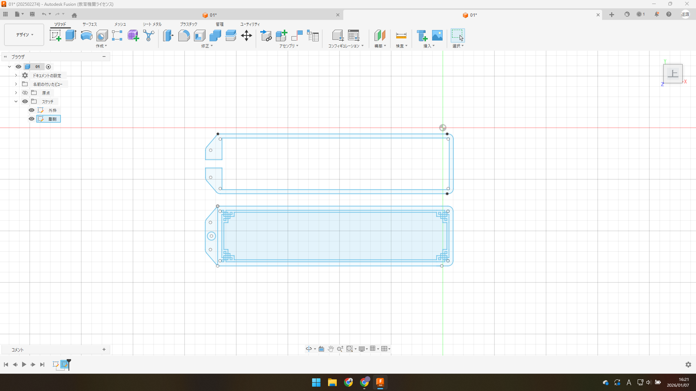
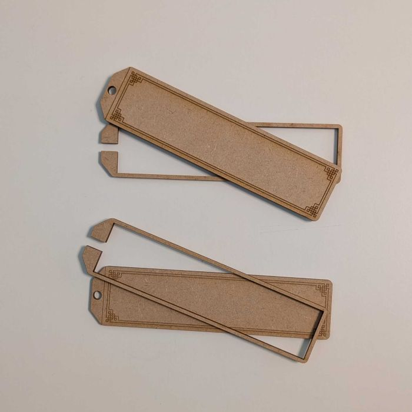
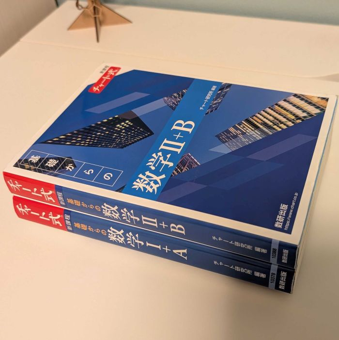
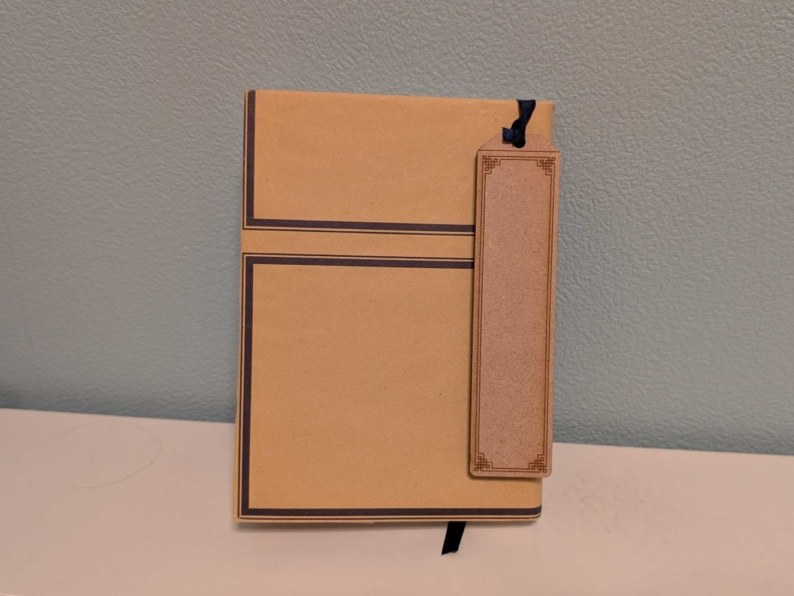

最終課題
『栞』
・アイディアスケッチ

・作成
設計 

レーザ加工機を利用して彫刻、カット
木工用ボンド塗り、重しを乗せて固定


・完成品

・作品説明
本を守れる栞。
鞄の中に本を入れると時々他の荷物によってページが折れてしまう
→上から物を入れても大丈夫なように本の上部を守れるものを作ろうと思った
考えていく過程で栞と合体させれば、本に紐を挟むことでさらに固定されて丁度良いのではないかとなった
鞄の中に本を入れると時々他の荷物によってページが折れてしまう
→上から物を入れても大丈夫なように本の上部を守れるものを作ろうと思った
考えていく過程で栞と合体させれば、本に紐を挟むことでさらに固定されて丁度良いのではないかとなった
・使用素材、機材
・MDF材（2.5mm）
・レーザー加工機
・レーザー加工機